Mundial Suiza 1954

Seleccion Campeona del Mundo
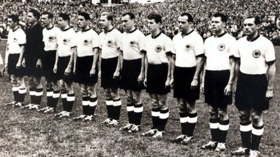
Poster oficial del Mundial de Suiza 1954
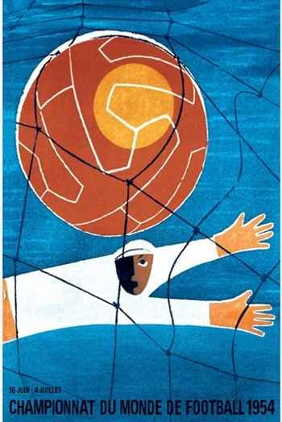
Trofeo del Mundial de Suiza 1954

Album de cromos del Mundial de Suiza 1954
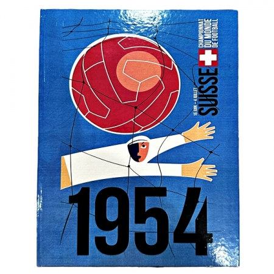
Balón oficial del Mundial de Suiza 1954
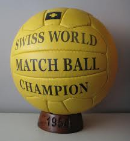
Participantes
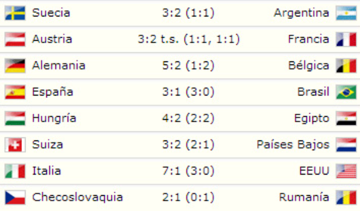
Estadisticas del Mundial de Suiza
Estadios del Mundial de Brasil 1950
Berna: Wankdorf Stadium
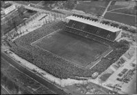
Basilea: St. Jakob Stadium
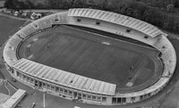
Lausanne: Stade Olympique de la Pontaise
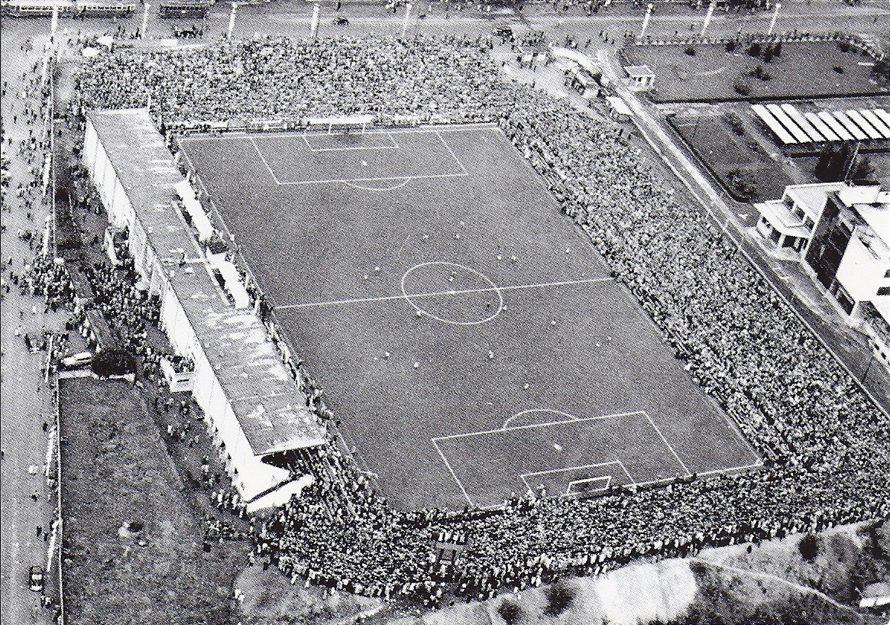
Ginebra: Stade des Charmilles
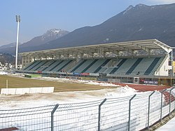
Lugano: Stadio di Cornaredo
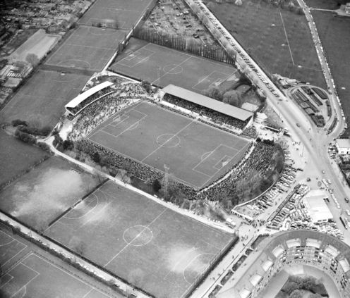
Zürich: Hardturm-Stadions
Semifinales del Mundial de Suiza 1954
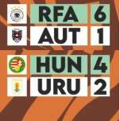
Final del Mundial de Suiza 1954
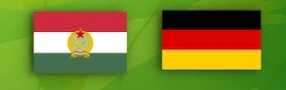
Datos relevantes del mundial